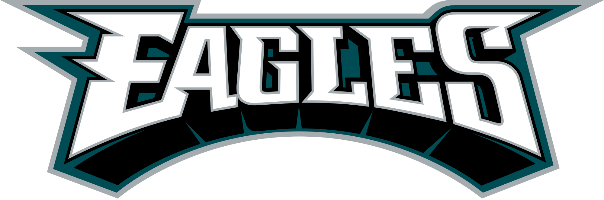

Software Engineering Lead - Philadelphia, PA
A software engineering lead candidate skilled in planning and leading development in new products or enhancements, writing and reviewing clean, testable UI code, and determining the appropriate scope and timeline for deliverables. Experienced with Scala, Akka, Play, Java, C++, VB, React, jQuery, Node, vanilla JavaScript, and mobile-first responsive development with HTML5 and CSS3. Versed in modern tooling and excited to pick up the right tools for the job.
Yes, I do have two names! I am bigender, a subset of non-binary. I use Jem (she/her) when presenting female and Jason (he/him) when presenting male. Don't worry about which to use when contacting me, if you can't see me I don't expect you to know my gender! In synchornous communication I may say "It's Jem today" or "It's Jason today" to make things easier. I also generally update my Slack handle to make it simpler for people talking to me that day. If I'm not around, I don't care, but if you would like a rule of thumb, just use whichever name and pronouns I was using when you last spoke to me.
I'm also a die hard Eagles fan and resident football-explainer for my friends and family.
I received my Bachelors in Theoretical Mathematics from RPI when I was 19. Although my degree required programming classes, I taught math and computer science before becoming a programmer full time. However, my coding skills were frequently relied upon by the schools I worked for. For example, when I worked for Connections Academy, there was a need for a scheduling program for their Blended Learning Center. Existing programs all assumed every student was present every day, but the blended model meant that students only attended the center 2-4 days a week depending on their needs and completed the rest of their course work virtually. I wrote a scheduling program for the school, originally in C++, then at the school's request I refactored it to VB to intergrate it with Excel, where class lists were stored. After many years of programming for schools for free, I decided to change careers and develop software full time.
I was hired by Wingspan, an IQVIA company, as a Software Engineer II. For 9 months I worked on their Support team, fixing bugs and writing data corrections, before they asked me to lead the Technical Services Team. As Lead of the Technical Services Team, I designed, architected, and oversaw all work on solutions that allowed non-technical staff to perform data migrations and other data corrections without significant engineering assistance, freeing the engineering staff up to work on more complex problems. This included the Internal API (iAPI) which was primarily used to important data for medical studies into our system for our main application the Electronical Master File (eTMF). The iAPI was capable of reading customizable mappings from a client's system to the 60+ pieces of metadata we tracked in the eTMF for each document, processing, and uploading about 10k documents per hour. I lead the Technical Services for two years and then began looking for another challenge.
I found that challenge at TrueAccord in the form of leading the Multiple Accounts Project and being the Oncall Admin for the Recover Team. As the Multiple Account Project Lead I designed and am currently leading work on a project that will identify when separate accounts placed by different creditors are actually for the same consumer and create a dashboard experience for consumers where they can interact with all their creditors. This work includes creating a new microservice to overhaul the way we log actions in our system, so that we can track events on the consumer level and record a subset of all the consumers' debts that were interacted with during a specific event.
After True Accord, I moved to Capital One, where, as a Senior Software Engineer, I worked on their Orchestrator project. For Orchestrator I wrote endpoints and tests related to creating and updating auto loans, including service tests, unit tests, and canary tests. The work on the canary tests was particularly interesting since it required me to learn Go. I also proposed and advocated for DEI related code changes that would improve over 1500 interal Capital One systems.
Thank you for visiting! Please feel free to use any of the methods listed here to get in touch with me. I am currently open to new work opportunities, and I would love to hear about what you are doing.
Email LinkedIn GitHub Resume